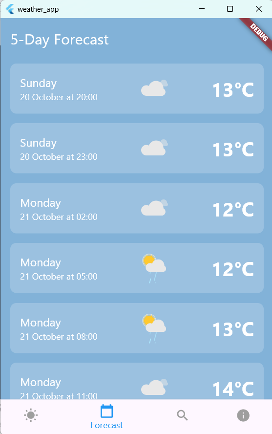
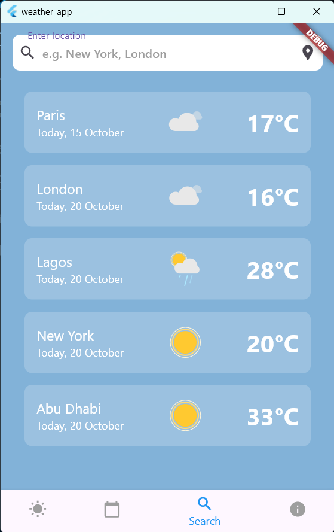

Skills
 Angular
Angular
• Front-end Developer • Designer •
Angular
Front-end development with Angular framework. Collaboration with designers to create responsive website using HTML, CSS and TypeScript, while ensuring a user-friendly interface and cross-browser compatibility. Coordination with the back-end team. Create Figma mockups when needed.
I'm a Front-End Developer with 2 years of professional experience building responsive and dynamic web applications using Angular. I thrive on turning complex problems into elegant, user-friendly solutions and enjoy collaborating closely with design teams to bring interfaces to life.
My expertise lies in HTML, CSS, and TypeScript, with a strong focus on Angular for building scalable applications. I’m well-versed in responsive design principles and have a keen eye for detail, ensuring that my work is not only functional but also visually appealing.
In my current role at Simcorp A/S, I’ve been involved in developing and maintaining web applications, collaborating with cross-functional teams to deliver high-quality software. I’m experienced in using Git for version control and have a solid understanding of Agile methodologies, which helps me adapt quickly to changing project requirements. In addition to development, I’ve worked with Figma to assist in UI/UX design, which gives me a strong understanding of visual hierarchy, usability, and design consistency. This blend of design and development helps me create seamless user experiences from concept to code.
Currently, I’m wrapping up my BSc in Computer Science, where I’ve built a solid foundation in programming, software development, and problem-solving. I’m eager to continue learning and growing in my career, and I’m particularly interested in opportunities that allow me to work on innovative projects that challenge my skills.
This part of the portfolio demonstrates some of the project I have created during my time studying for my BSc Computer Science degree. There are no available projects to demonstrate from my actual job.
The application works like a regular weather app, which picks up your location using geolocator and then displays the weather at your area. There is also an option to see the weather forcast for the next 5 days every 3 hours and you can search for the weather at a specific location.
This project is a weather app that was created using Flutter. The project is split into folders that include different parts of the application. The project includes finding the current location using geolocation and the temperature in that location while using the API from OpenWeatherMap. The projct has 4 screens which inlcude current weather, forecast, search location and about screen.
Contains the code for finding the weather for the current location. The sceen also includes a small description, date and a grapical representation of the current weather. The backgroud for the page changes depending on the weather (sunny - yellow, rain - gray, default - light blue).

The forecast screen shows the weather for the same location for 5 days every 3 hours. The screen also gives a graphical presentation of the weather, date, time and description.
This page contains a search bar that can be used to search for locations. For example, want to see weather in Paris, type it in and press enter. The program will display all the searched cities as a list. The locations will be saved until the device is restarted and data wiped. The locations can also be removed by clicking on the card which needs to be removed.

This page is used as the navigation bar, which connects to all of the other pages.
This page is contains information about me.
Includes all the methods to get the data for the displaying the weather. Currently includes my api key as a string, which is added onto the URLs to get the data from the OpenWeatherMap.